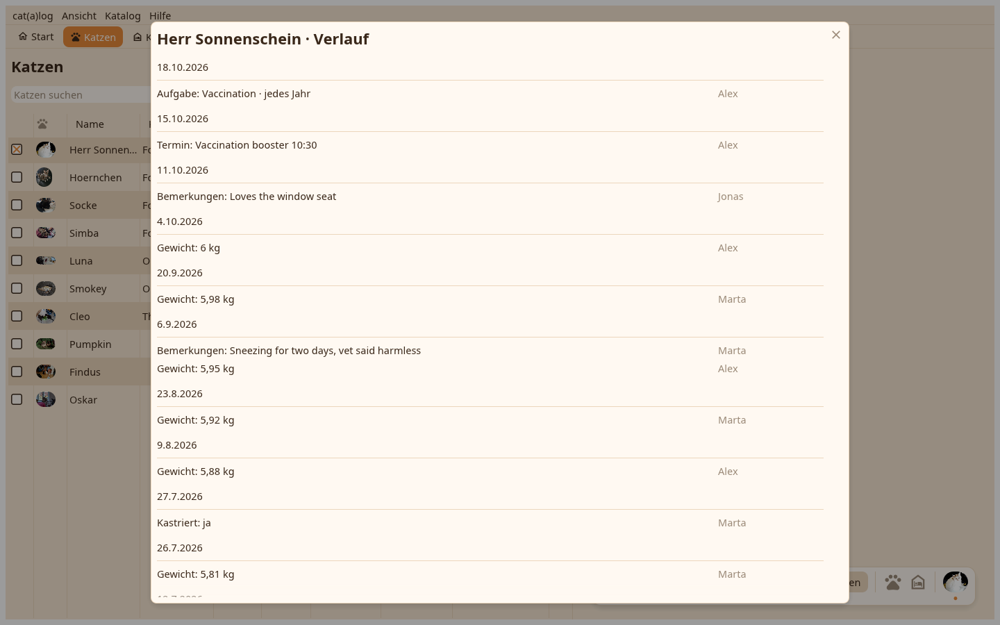

Der Verlauf eines Feldes liest sich wie ein Tagebuch, der Tag über dem, was an ihm geschrieben wurde; die Zeitleiste listet alles, was einer Katze oder einem Zuhause geschah.

Aus dem ⋮ an einer Zeile: jeder Wert mit Datum und Autor, ein Klick korrigiert, der Papierkorb entfernt, der Pfeil holt einen entfernten zurück; das Auge zeigt entfernte Werte. Der Verlauf einer Zahl ist das Diagramm: Woche, Monat, Jahr, alles oder ein eigener Bereich, die geglättete Linie und der Trend, "Diagramm als Bild kopieren" für einen Messenger.
Werte, Fotos, Umzüge, Aufgaben-Haken und Termine der Reihe nach. Ein Klick auf einen Umzug öffnet den Umzugsdialog auf diesen Umzug eingestellt und korrigiert wohin und wann; die Zeitleiste eines Zuhauses listet Ankünfte und Abgänge seiner Katzen. Termine und Aufgaben öffnen ihre Editoren, der Erledigt-Tag einer Aufgabe sein Protokoll.